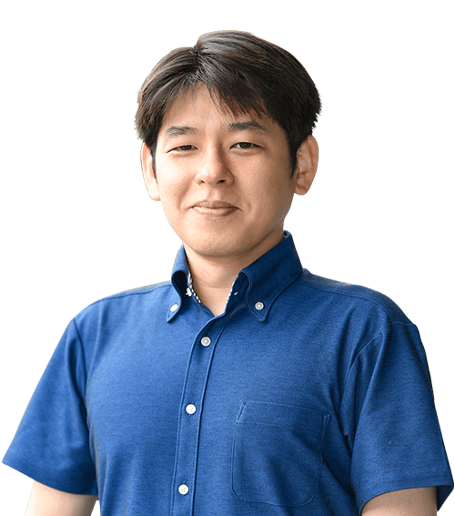

Contents
この課程でできること
Topics
この号の見どころ
- 優秀プレゼンテーション賞
- センタンLAB（先端理工学部スペシャルサイト）
- 21の学びのプログラム（データサイエンス・人工知能・情報科学・数理解析・現象の数理）
- BYOD（ノートPC必携化）
- R-Gap・プロジェクトリサーチ：約3ヶ月間（3年次の6月中旬〜9月中旬）の自主活動期間
- STEAMコモンズ：「ものづくり」と「デザイン」のためのファブ施設
Contributors
課程を支える先生たち

佐野彰
助教
人工認知・数理脳科学

深尾武史
教授
発展方程式

高橋隆史
准教授
人工知能（機械学習、パターン認識）

馬青
教授
自然言語処理（知能情報学）

角川裕次
教授
分散アルゴリズム

村川秀樹
教授
応用数学、数値解析学

谷綾子
准教授
イギリス文学
飯田晋司
教授
物性理論（物理）
課程担当教員は全17名。誌面では8名を抜粋してご紹介しています。